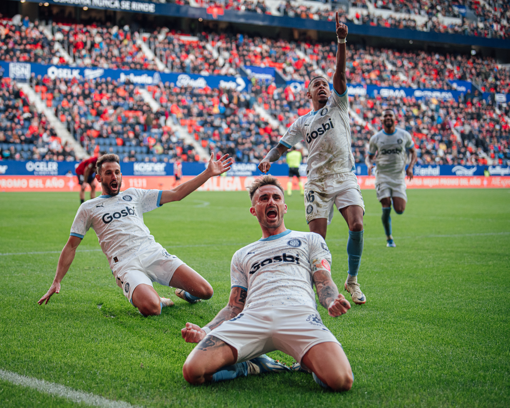
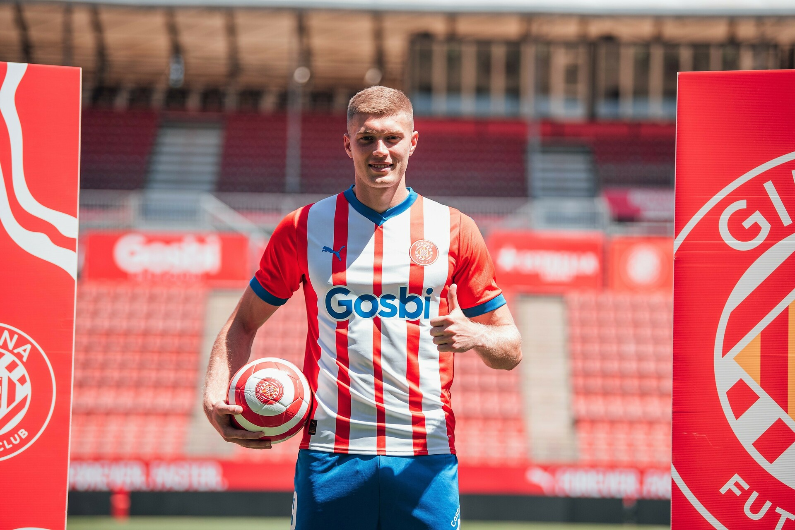

A terres gironines encara queda el record del somni viscut l’última temporada. Després d’un any en el retorn a primera on un mal final va condemnar a l’equip a quedar-se sense Europa, Quique Cárcel i Míchel van crear una obra mestra. Amb fitxatges de noms desconeguts o que havien perdut la confiança, l’entrenador madrileny va crear un entorn perfecte per treure el màxim rendiment d’aquests jugadors. Tsygankov, Dovbyk, Savio, Miguel Gutiérrez… la llista és ben llarga. Un moment d’inspiració que va durar tota la temporada, i que va tenir al Girona lluitant pel lideratge de la lliga durant bona part de la temporada, i acabant en posicions d'accés a Champions. L’equip presidit per Delfí va meravellar, no només al país, sinó a tot el Vell Continent, però replicar-ho està resultant ser missió impossible.
El futbol a la capital del Ter ja no és el que era la temporada passada. Després d’un any per emmarcar, el Girona s’ha desinflat, com era previsible. Que no es malinterpreti, no és una catàstrofe, l’equip marxa 8 a la classificació lluitant per posicions europees, però fa curt en relació amb les expectatives que va generar l’equip la temporada passada. En el seu debut a Champions, la cosa no ha anat gaire millor. El sorteig no es va portar massa bé amb l’equip de Míchel: PSG, Liverpool, Milan, Arsenal… No era feina fàcil, i l’equip just ha quedat eliminat, sumant tan sols 3 punts dels 21 possibles, fent-lo el quart pitjor equip de la competició. Encara que les sensacions en molts partits han sigut bones i existeix el pensament que l’equip ha sumat menys punts dels merescuts, la veritat és que el Girona no s’ha aconseguit consolidar com un equip a tenir en compte a escala europea. Aquesta caiguda en el rendiment d’una temporada a l’altra segurament té a veure amb la fuga de talent del passat estiu.
La raó és que el fantàstic rendiment de l’equip no va passar desapercebut per equips amb més història i més potents econòmicament que el Girona, que van posar l’ull en els pilars d’aquell equip. Un huracà que no va enderrocar la casa, però que va deixar els fonaments molt tocats i que ha obligat a Míchel i Quique Cárcel a posar-se mans a l'obra per tractar de reconstruir l’equip. Primer, van arribar les marxes dels jugadors cedits. Els dos brasilers del City Group, segurament dos dels jugadors més destacats del club, Savio i Couto, van tornar a Troyes i Manchester respectivament. L’extrem ha fet el salt al City de Guardiola, on està comptant amb molts minuts, i el lateral ha sortit cedit cap a Dortmund, on no està acabant de trobar el seu lloc a l’onze. A la part defensiva també van perdre a Eric Garcia, que va tornar a Barcelona per guanyar-se un lloc a la rotació de Hansi Flick. Però les dues baixes més importants van arribar en forma de venda. I és que el Girona va haver de dir adeu segurament als seus dos millors jugadors. Aleix Garcia va sortir per 25 milions d’euros direcció al Bayern Leverkusen de Xabi Alonso, on no acaba de ser indiscutible a l’onze inicial. I Artem Dovbyk, que venia de ser el pitxitxi de LaLiga, va deixar 35 milions i va posar rumb a la Roma, on de moment ja ha anotat 11 gols en 26 partits. El repte per l’equip directiu gironí estava servit. Quique Cárcel ha intentat reconstruir l’equip fins amb 11 fitxatges, de la talla de Brian Gil, per substituir Savio, Van de Beek o Abel Ruiz, i per acabar, es va fer oficial el fitxatge més car de la història gironina, va arribar Yáser Asprilla, procedent del Watford per 18 milions d’euros. Malgrat l’esforç per part de la junta, l’equip no està mantenint el llistó tan alt que havien marcat, i ara per ara sembla molt improbable repetir una gesta com la de l’any passat.
Encara queda molta temporada, i per un club com el Girona assentar-se a posicions europees és un pas endavant. Suposa seguir el camí de Vila-real, Real Societat, Athletic Club… i alçar-se com un dels millors equips en l'àmbit domèstic, fora dels tres titans que són Barça, Madrid i Atlético. I a partir d’aquí, mantenir-se i qui sap si, somiant, anar pujant de nivell per arribar al capdamunt del futbol espanyol. El què queda clar és que Girona s’ha de desencantar de la utopia de la temporada passada, i centrar-se a gaudir d’aquest moment històric i un futur que es presenta brillant.